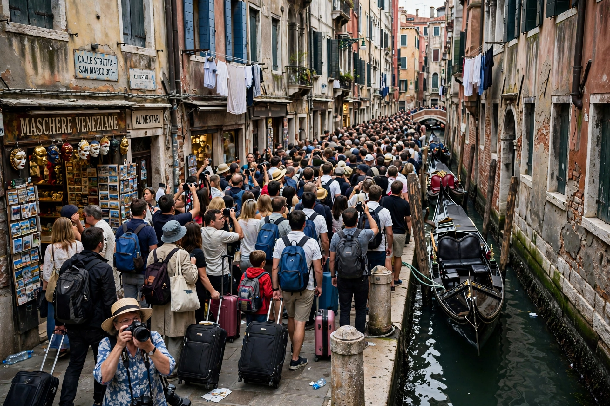

Overtourism describes destinations where tourism exceeds carrying capacity, worsening residents' quality of life and visitors' experience through crowding, housing pressure from short-term rentals, and environmental strain.
Cheap flights, cruise ships, social media, and platform rentals concentrated demand. Effects include rent inflation, displacement, erosion of heritage sites such as Machu Picchu and Maya Bay, and local protests — notably in Barcelona, Venice, and the Balearics.
Measures include Venice's day-tripper entry fee, Amsterdam's stop on new hotels and anti-tourism campaigns, Bhutan-style high-value policies, timed entry, and dispersal marketing. The term gained currency after 2017 and contrasts with sustainable tourism.